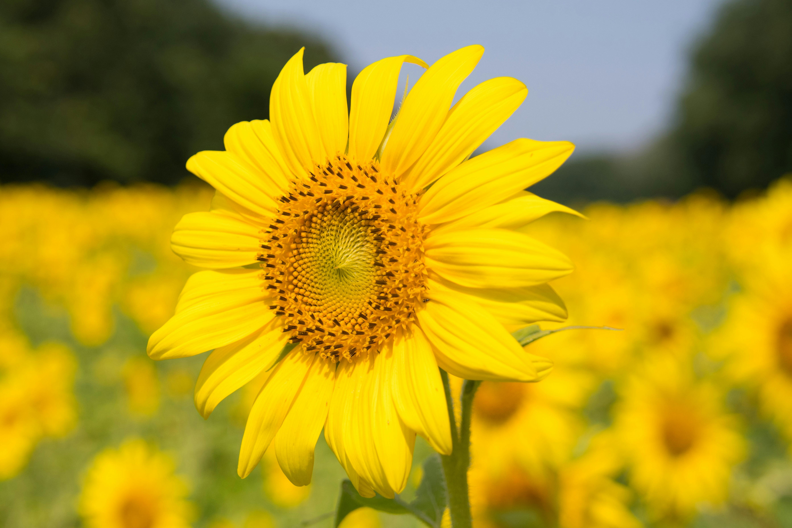

FLORALS
Types of Flowers
Tulips
Tulips are spring-blooming perennial herbaceous bulbiferous geophytes in the Tulipa genus.
Their flowers are usually large, showy, and brightly coloured, generally red, orange, pink, yellow, or white.
They often have a different coloured blotch at the base of the tepals, internally.

Sunflower
Sunflowers (Helianthus) are admired for their vibrant, sunny appearance and impressive height.
They often have a different coloured blotch at the base of the tepals, internally.
The common sunflower is harvested for its edible oily seeds, which are often eaten as a snack food.

Roses
Roses (Rosa spp.) are one of the most popular and beloved flowering plants in the world, known for their beauty, fragrance, and versatility.
A rose is either a woody perennial flowering plant of the genus Rosa, in the family Rosaceae, or the flower it bears. There are over three hundred species and tens of thousands of cultivars.


Email: info@floral.com
Mobile: +216 345 67890
© 2025